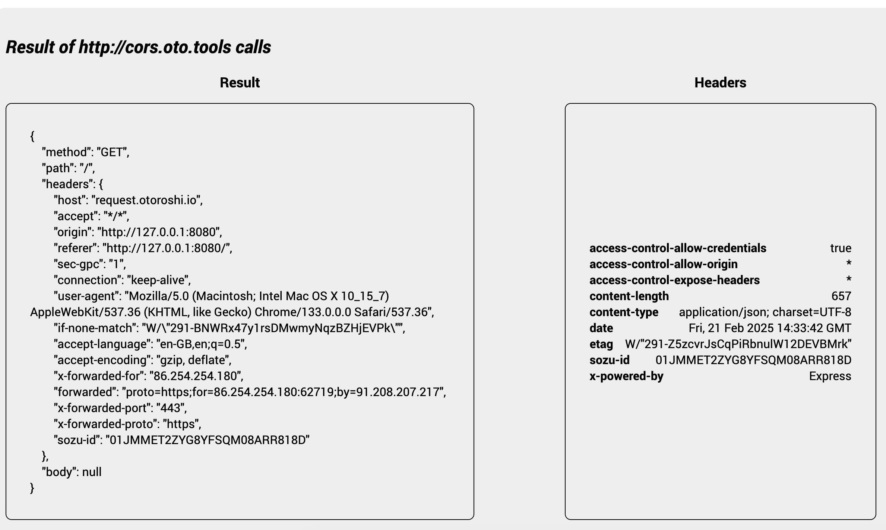

Calling Otoroshi from a Frontend
Tutorial
After completing these steps, you will be able to call Otoroshi with CORS rules applied using Otoroshi.
Before your start
If you already have an up and running otoroshi instance, you can skip the following instructions
Let’s start by downloading the latest Otoroshi.
curl -L -o otoroshi.jar 'https://github.com/MAIF/otoroshi/releases/download/v17.2.0-dev/otoroshi.jar'
then you can run start Otoroshi :
java -Dotoroshi.adminPassword=password -jar otoroshi.jar
Now you can log into Otoroshi at http://otoroshi.oto.tools:8080 with admin@otoroshi.io/password
Create a new route, exposed on http://myservice.oto.tools:8080, which will forward all requests to the mirror https://request.otoroshi.io. Each call to this service will returned the body and the headers received by the mirror.
curl -X POST 'http://otoroshi-api.oto.tools:8080/api/routes' \
-H "Content-type: application/json" \
-u admin-api-apikey-id:admin-api-apikey-secret \
-d @- <<'EOF'
{
"name": "my-service",
"frontend": {
"domains": ["myservice.oto.tools"]
},
"backend": {
"targets": [
{
"hostname": "request.otoroshi.io",
"port": 443,
"tls": true
}
]
}
}
EOF
Let’s start by creating an index.html file from where we will call our Otoroshi Route.
The contents of your index.html file should be likes this:
<!DOCTYPE html>
<html>
<head>
<title>CORS tutorial</title>
<link rel="stylesheet" href="https://cdn.jsdelivr.net/npm/roboto-font@0.1.0/css/fonts.min.css">
</head>
<style>
* {
font-family: Roboto;
}
.flexcol {
display: flex;
flex-direction: column;
align-items: center;
justify-content: center;
flex: 1;
}
body {
display: flex;
flex-direction: column;
align-items: center;
justify-content: center;
min-height: 100vh;
}
button {
padding: 1rem;
border-radius: 1rem;
border: none;
cursor: pointer;
}
pre {
display: flex;
align-items: center;
justify-content: center;
word-wrap: break-word;
overflow-wrap: break-word;
white-space: pre-wrap;
border: 1px solid #000;
height: 100%;
min-width: 10rem;
min-height: 5rem;
padding: 2rem;
border-radius: .5rem;
}
h3 {
margin: 0;
}
.result {
display: flex;
gap: 1rem;
}
.container {
background-color: #eee;
padding: 1rem;
border-radius: 1rem;
margin-top: 2rem;
}
.header {
display: flex;
justify-content: space-between;
gap: 1rem;
width: 100%;
}
.header span:first-child {
font-weight: bold;
}
#headers {
display: flex;
flex-direction: column;
align-items: start;
}
</style>
<script>
function callDemoRoute() {
fetch('http://cors.oto.tools:9999', {
method: 'POST',
credentials: 'include',
headers: {
'Content-Type': 'application/json'
},
body: JSON.stringify({ foo: "bar" })
})
.then(r => {
let headers = ""
for (let entry of r.headers.entries()) {
headers += `<div class="header"><span>${entry[0]}</span> <span>${entry[1]}</span></div>`
}
document.getElementById('headers').innerHTML = headers
return r.json()
})
.then(result => {
document.getElementById('result').textContent = JSON.stringify(result, null, 4)
})
.catch(err => {
let error = err.message;
if (err.name === "TypeError" && err.message === "Failed to fetch")
error = "CORS error: The server is not allowing cross-origin requests."
document.getElementById('headers').innerHTML = ''
document.getElementById('result').textContent = error
})
}
</script>
<body>
<h1>Welcome to the CORS tutorial</h1>
<button onclick="callDemoRoute()">Call demo Otoroshi Route</button>
<div class="container">
<h2 style="font-style: italic;">Result of http://cors.oto.tools calls</h2>
<div class="result">
<div class="flexcol">
<h3>Result</h3>
<pre id="result"></pre>
</div>
<div class="flexcol">
<h3>Headers</h3>
<pre id="headers"></pre>
</div>
</div>
</div>
</body>
</html>
Once created, you can expose it using http-server tool or any other HTTP server.
http-server .
# Available on:
# http://127.0.0.1:8080
Now, click on the main button on the simple UI. Since nothing is configured yet, the call should result in a “failed to fetch” error, and you should see the following error in your browser’s developer tools:
Access to fetch at 'http://cors.oto.tools:9999/' from origin 'http://127.0.0.1:8080' has been blocked by CORS policy:
No 'Access-Control-Allow-Origin' header is present on the requested resource. If an opaque response serves your needs,
set the request's mode to 'no-cors' to fetch the resource with CORS disabled.
Use the CORS
Let’s create the route using the Otoroshi admin API. The route configuration is straightforward, with a few fields specifying the name, frontend, and CORS plugin in the list of plugins.
curl -X POST 'http://otoroshi-api.oto.tools:8080/api/routes' \
-H "Content-type: application/json" \
-u admin-api-apikey-id:admin-api-apikey-secret \
-d @- <<'EOF'
{
"name": "cors route",
"frontend": {
"domains": ["cors.oto.tools"]
},
"backend": {
"targets": [
{
"hostname": "request.otoroshi.io",
"port": 443,
"tls": true
}
]
},
"plugins": [
{
"plugin": "cp:otoroshi.next.plugins.Cors",
"enabled": true,
"config": {
"allow_origin": "*"
}
},
{
"plugin" : "cp:otoroshi.next.plugins.OverrideHost",
"enabled": true
}
]
}
EOF
Try calling your route again using the button.

@@@ div
This time, the response will be received, and the CORS rules will be checked by your browser. To see the headers added by Otoroshi in the response, expose these headers by specifying them in the plugin configuration.
Now open your browser to http://otoroshi.oto.tools:8080/, log in with the credential generated in the logs. and navigate to the CORS route previously created.
Edit the CORS plugin by adding a new entry * in the Expose headers input, and save your route. Try calling your route again using the button.
@@@ div { .centered-img } 
You should now be able to see the headers sent back by Otoroshi. Let’s reduce the scope of allowed origins by restricting access to the route to your own domain only.
Edit the CORS plugin by replacing the * entry of the Allow origins input by ’http://localhost:8080, and save your route. Try calling your route again using the button.
Try calling your route again using the button.

You can filter the HTTP methods allowed to be used on your route. Edit the CORS plugin and add GET, POST, OPTIONS, HEAD methods to the list of Allow methods. Save your route and try calling your route again using the button.

Try calling your route again using the button.
One important parameter of the CORS Plugin is the Allow credentials flag. It allows the browser to send or not send credentials (such as cookies, authorization headers, and TLS client certificates) to the server.
Let’s test this scenario. Edit the index.html and add the following line to the script:
fetch(...., {
headers ....,
credentials: 'include'
})
Call the route again and toggle the Allow credentials flag in your CORS plugin to show the difference.